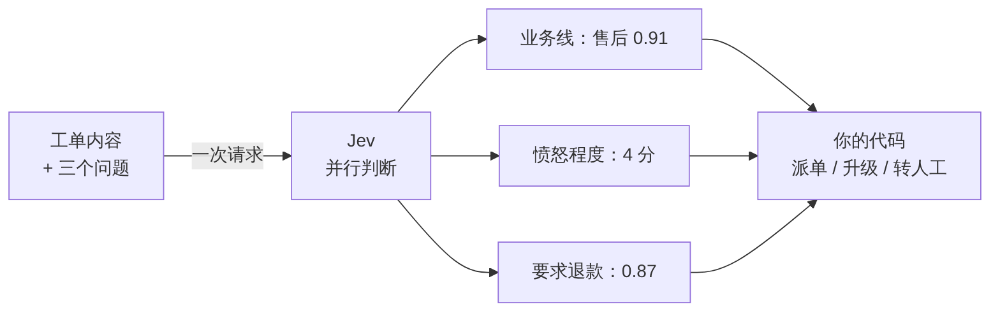
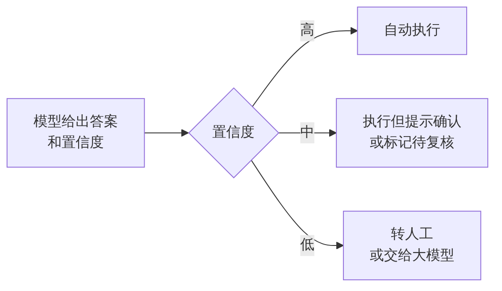

写在前面：我们给 AI 修了一个前台，后厨还在手工切菜
打开你手机里最近更新过的几个 App，数一数，有几个多了一个“问问 AI”的入口？
电商有购物助手，银行有智能客服，地图有出行助手，办公软件在右边栏塞了一个对话框。两年多来，行业里讨论最多的 AI 产品形态，几乎都长一个样：一个输入框，一段流式吐出来的文字。
我想问一个不太客气的问题：这些对话框上线之后，你的业务流程里，有哪一个判断真的交给了 AI？
工单该派给哪个组，还是那张写了几百行的关键词规则表。评论要不要折叠，还是敏感词库加人工抽检。用户是不是要流失，还是运营每周拉一次表、凭经验圈人。AI 在前台陪用户聊天，后厨切菜、配菜、上菜的活，一样没少。
这像极了一家餐厅：花大价钱请了一位能说会道的迎宾，结果厨房还是老样子。客人进门很开心，等菜照样等四十分钟。
这个问题，我是在自己的项目里撞上的。我在做一个家居售后客服项目：先微调了一个客服模型，现在在用 Dify 搭一个电商客服 Agent。我负责的部分，一开始是“情绪问答 + 转人工”的训练数据，现在是工具调用和转人工模块。
做数据的时候，我发现一件很别扭的事。用户说“这个破沙发我已经找你们三次了，再不解决我就去投诉！”，系统真正需要的只是一个判断：要不要转人工？可我们的做法，是把整段话丢给大模型，让它分析一通，再按格式返回结果。说白了，我们在让一个会写诗、会写代码的模型，帮我们做 if/else。
问题不在 AI 不够聪明。2026 年 9 月 15 日，一家叫 TypeSafe AI 的公司结束隐身。它的创始人 Diogo Almeida 参与过 ChatGPT 背后的研究，他在发布博客的第一句话就问：模型聊天早就超过人类了，自动化到底在哪？
他给出的答案很反直觉：做一个不会说话的模型。它叫 Jev，不生成文字，只回答“是或否、选哪个、打几分”，并且告诉你它有多确定。
我这篇文章不是想吹一个新模型。Jev 刚刚开放早期体验，很多说法还没被第三方充分验证，后面我会专门泼冷水。我真正想讲的是它背后的那个判断：
谁先把这些 if 换成“会判断的 if”，谁的产品就先真正长出 AI 的能力。下面分八个部分讲清楚：为什么对话框到头了，Jev 做对了什么，它能用在哪、不能用在哪，以及作为产品经理，下周一上班你可以先做哪一件事。
一、对话框的天花板：聊天式 AI 为什么进不了业务流程
先说清楚，我不是说对话框没用。写周报、查资料、改代码，大模型已经实实在在帮了很多人。问题出在另一类需求上：让 AI 在流程里替你做判断。
举一个最普通的例子。客服系统每天进来几万张工单，每一张都要判断三件事：是不是投诉，属于哪个业务线，要不要升级给主管。今天大多数团队是怎么做的？
第一种做法是写规则。“退款”“骗子”“投诉”这些词命中了就算投诉。规则越写越长，漏判越来越多，因为用户不会按你的关键词说话。
第二种做法是接大模型。把工单丢给模型，让它“以 JSON 格式输出分类结果”。Demo 很惊艳，一上生产就开始出状况。我把常见的坑归成五类：
慢。大模型是一个字一个字往外吐的。TypeSafe 在发布博客里引用的公开测速显示，前沿模型端到端响应在 3 秒到 329 秒之间。给人看够用了，放进一个每秒要处理几十次的流程，就是卡脖子。
贵。每张工单都调一次大模型，账单跟着工单量线性增长。很多 AI 功能不是被用户否掉的，是在月底对账时被财务否掉的。
格式会出错。你要的是“投诉 / 咨询 / 建议”三选一，它偶尔给你来一句“这张工单看起来更像是投诉”。工程师只好在外面再包一层解析、校验、重试。
不知道自己不知道。这是最要命的一条。TypeSafe 的博客说得很直白：一个模型九成五的时候都能做对，但它不告诉你哪一次落在那剩下的百分之五里，这件事就没法交给它自动做。
前后不一致。同一张工单问两次，答案可能不一样。运营拿着两次结果来找你，你解释不了。
这五个坑有一个共同根源：我们在用一个“为聊天设计的模型”，去做“需要下判断的事”。
聊天要的是表达丰富、语气自然、能自由发挥。判断要的恰恰相反：答案范围事先定好，越快越好，越便宜越好，拿不准的时候要老实说拿不准。
所以你会看到一个很普遍的现象：AI 功能都挤在对话框里，因为对话框里有人兜底。用户看到回答不对，自己会再问一遍。一旦离开对话框，进到没人看着的流程里，团队马上就不敢用了。
对话框之所以成了 AI 产品的默认形态，很多时候不是因为它最好，而是因为它最安全。
二、Jev 是什么：一个“不会说话”的模型
一句话说清楚：Jev 是一个专门做判断题和选择题的模型，它不写作文。
它的用法跟大模型完全不同。你不用写一段长长的提示词，然后等它回一段话。你只需要给它两样东西：
状态（State）：当前发生了什么。可以是一段文字，也可以是一段 JSON，比如一张工单的内容、一个用户的行为记录。
问题（Questions）：你想让它判断什么。每个问题都事先定好答案的类型。
它的官方文档把问题分成三种：
还是拿工单举例。你把工单内容当作状态发过去，同时问三个问题：它属于哪个业务线（Choice），用户愤怒程度几分（Score），“用户明确要求退款”这句话成不成立（Noul）。一次请求，三个答案一起回来。

上图里的数字是我为了说明画的示意，不是真实调用结果。
这个设计带来了几个关键差别，我挑产品经理最该关心的说：
第一，答案不会跑出你定的范围。你给了三个选项，它就只会在这三个里选。TypeSafe 把这叫“类型安全”，公司名字也是从这来的。它宣传“不会幻觉”，准确的意思是不会给出范围外的答案，不是“永远答对”。这一点后面还会再说。
第二，每个答案都带着“我有多确定”。这是 Jev 最核心的卖点。它用一种叫 RLCD（面向校准决策的强化学习）的方法训练，目标是让它说“九成把握”的时候，真的大约九成是对的。
这一点我印象特别深。我做过一期口播，讲 AI 为什么总爱夸你：RLHF 训练时，人类打分员更喜欢听起来自信、顺着自己说的回答，模型就学会了讨好。它说“我确定”，不代表它真的确定。而 Jev 的创始人 Diogo Almeida，恰恰是当年在 OpenAI 参与 RLHF 和 InstructGPT 的人。从“让模型讨人喜欢”到“让模型老实说出自己有多确定”，我觉得这是整件事最值得琢磨的地方。
当然，“以校准为训练目标”不等于“已经校准好了”。校准只在大量样本的平均意义上成立，单个答案仍然可能出错。
第三，问题是同时判断的。大模型要一个字一个字地生成，Jev 是一次把所有问题并行算完。文档里说，多加几个问题，响应时间几乎不变。
第四，快和便宜。官方给出的价格是输入每百万 token 0.042 美元，输出不收钱；端到端延迟在 70 到 500 毫秒之间。
如果要找一个最贴切的比喻，有位开发者博主的说法我很认同：Jev 就是一个聪明的 if 语句。普通代码能写 if 订单金额 > 100，因为金额算得出来。但“这条消息是不是在生气”“这封邮件是不是在说账单”，这种需要判断的条件，传统代码就写不了。Jev 补的就是这一块。
三、快思考和慢思考：AI 在产品里的新分工
“System One”这个名字，来自心理学家卡尼曼的《思考，快与慢》。书里把人的思考分成两种：一种是不假思索的快判断，比如看到一张脸就知道对方在生气；另一种是需要动脑的慢推理，比如算一道多位数乘法。
这个划分放到 AI 产品里，刚好能解释很多团队踩过的坑。
过去两年，我们几乎把所有事都交给了“慢思考”型的大模型。让它写文案，没问题，这本来就是慢活。可让它判断一条评论要不要折叠，就相当于请一位教授来门口查验身份证：能干，但又慢又贵，而且大材小用。
我的判断是：未来一个成熟的 AI 产品，内部一定是“快慢分工”的。大致是这样：
这张表里，最容易被忽略的是第三行：代码重新变得重要了。
TypeSafe 的文档里有一条建议，我认为是整套思路的精华：每个问题只问一件具体的小事，问那种“行家看几秒就能判断”的事。需要综合考虑多个因素的，就拆开问，再用代码把结果组合起来。
文档举的例子是评估创业项目。不要问“这个项目怎么样”，而是分开问市场规模、技术可行性、差异化，各打各的分，再用你自己的公式加权。优先级变了，改代码里的一个系数就行，不用重写一大段提示词。
这个道理，产品经理其实很熟。我们做需求评审时，最怕听到“这个功能要做得智能一点”。智能到底指什么？拆不下去的需求，就做不出来。AI 也一样：一个拆不开的大问题，交给任何模型都不靠谱；拆成十个小判断，每个都能验证、能调整、能追责。
放回我们的客服项目，这个分工让我把方案重新想了一遍。过去我的思路是训练一个客服模型，让它既识别情绪、又回答用户、又判断要不要转人工。现在我会把它拆开：判断情绪等级、要不要转人工，交给规则或判断型模型；安抚用户、解释售后政策，交给会说话的模型；人身安全、退款赔偿这类高风险情况，直接交给人。
我在课上分享这个思路时，预想过一个追问：既然判断不该交给大模型，那你们为什么还在微调大模型？我的回答是，两者是分工，不是替代。判断归判断，说话归说话，组合起来才是一个完整的客服系统。
还有一个变化值得注意。以前大模型输出一段话，要被人读完才能产生价值。现在判断型模型输出的是一个数字，可以直接被程序拿去排序、分流、触发下一个动作。AI 的产出，第一次可以不经过人的眼睛，直接进入业务系统。
这就是标题里那句话的意思：下一个战场不在对话框里。对话框是人和 AI 说话的地方；if 语句是软件和 AI 说话的地方。前者的数量，受限于用户愿意聊多少次；后者的数量，只受限于你的系统里有多少个需要判断的地方。
四、为什么是现在：一个 160 年前的经济学悖论
Jev 这个名字，取自 19 世纪英国经济学家威廉·斯坦利·杰文斯。他观察到一个反常识的现象：蒸汽机烧煤的效率提高之后，英国的煤炭消耗不降反升。因为煤用得起了，原来不划算的地方也开始烧煤。
这就是“杰文斯悖论”：一样东西变便宜之后，人们用它的总量反而会大增。
TypeSafe 押的就是这个。他们在 FAQ 里说，智能的成本每降一个数量级，就会打开多一个数量级的使用场景。
这句话听起来很宏大，我换成产品经理算账的方式来讲。
假设你负责一个中等规模的客服系统，每天 1 万张工单，每张工单连同上下文大约 1000 个 token。一天就是 1000 万个输入 token。
按 TypeSafe 公布的价格（输入每百万 token 0.042 美元，输出免费），一天的判断成本大约是 0.42 美元。
按 TypeSafe 博客里列的常见大模型价格区间（输入每百万 token 0.20 到 10 美元，输出通常再贵几倍），光输入这一项就是 2 到 100 美元一天。
注意，这只是按官方公布价格做的粗算，没有算上重试、长上下文、汇率这些因素，也没有考虑质量差异。但数量级的差距是清楚的。
数量级的差距，会改变产品经理做决策的方式。
以前我们评估一个 AI 功能，第一反应是“这个判断值不值得调一次模型”。于是只有那些高价值的环节才用得上 AI：大客户的投诉、高风险的交易。长尾的、低价值的判断，只能交给规则，或者干脆不管。
当一次判断的成本低到可以忽略，问题就变成了：“这个地方有没有必要不用 AI？”
TypeSafe 在发布博客里讲过一个很有画面感的细节。他们用 Jev 做了一个玩《毁灭战士》（Doom）的机器人，每秒调用 10 次。负责的工程师一开始很担心费用，结果算下来大约每小时 7 美元，团队其他人都觉得比预期便宜。
每秒 10 次判断，这在大模型时代是一个几乎不会被认真考虑的设计。而这恰恰是游戏、推荐、风控、实时审核这些场景真正需要的频率。
当然，这里要加一句清醒的话：TypeSafe 自己也承认，他们没法证明现在的价格没有补贴，要靠时间证明它可持续。另外，它首页宣传的“快 193.6 倍、便宜 444.6 倍”来自他们自建的工作流评测，官方也说这属于真实收益里偏高的那一端。
所以我的建议是：别盯着倍数，盯着趋势。不管最后是不是 Jev 胜出，“判断”这件事的成本正在快速下降，这个方向基本是确定的。产品经理要提前想清楚的是：当判断变得几乎免费，你的产品里有哪些地方值得重新设计？
五、四个已经能落地的场景
讲完道理，说说具体能用在哪。下面四个场景里，第三、第四个是国外开发者和 LangChain 已经公开做出来的；第一、第二个是我结合国内移动互联网业务设计的思路，用来说明方法，不代表已有公司这样上线。
场景一：客服工单分流
现在的做法：关键词规则加人工二次分派。规则越写越长，漏判的工单在各个组之间来回踢。
换个做法：每张工单进来，一次问三个问题：属于哪个业务线（Choice），紧急程度几分（Score），是否涉及资金损失（Noul）。然后按置信度分三条路走：
置信度高：直接派单，不经人手。
置信度中等：派单，但在工单上标注“AI 不太确定”，让接单的人留意。
置信度低：进人工分派池。
看什么指标：自动派单占比、二次转派率、派错单的比例。
这个设计的关键不是模型多准，而是给“拿不准”留了一条正规的出路。TypeSafe 官网上的说法就是这个意思：每个判断都带置信度，把握大就执行，把握小就上报。
场景二：社区内容的实时初筛
现在的做法：敏感词库拦一道，剩下的靠用户举报和人工抽检。问题是阴阳怪气、引战、软广这类内容，词库根本拦不住。
换个做法：每条评论发出前，并行问几个小问题：是否人身攻击，是否引导站外交易，是否与帖子主题无关。每个问题单独判断、单独设阈值。哪条规则误伤多，就只调哪条的阈值，不用动其他的。
看什么指标：误伤率（被申诉成功的比例）、漏放率、审核员的人均处理量。
这类场景对速度要求很高，用户不会愿意等几秒才看到自己的评论发出去。这正是官方所说的实时应用：百毫秒级的响应，才能放进对体验敏感的环节里。
场景三：给 AI Agent 装一道护栏
这是 Jev 发布后 48 小时内，开发者社区就做出来的东西之一。据 Firecrawl 的整理，有人给编程 Agent 做了一道护栏：Agent 每次执行命令、写文件、改代码之前，先把任务、Agent 的计划和待执行的命令发给 Jev，问四个问题：这个操作能不能撤回，有没有偏离任务，会不会修改东西，影响范围多大。
对国内做 Agent 产品的团队来说，这个思路很值得借鉴。大模型负责干活，判断型模型负责在关键动作前踩一脚刹车。刹车要快、要便宜，否则每一步都卡几秒，Agent 就没法用了。
场景四：模型路由，把钱花在刀刃上
LangChain 已经接入了 Jev，其中一个用法是模型路由：先让 Jev 评估这个请求，简单的交给又快又便宜的模型，复杂的才交给能力强的大模型。
做过 AI 产品的人都知道，很多用户的问题其实很简单，比如“怎么改密码”。用最贵的模型回答所有问题，是很多团队 AI 成本居高不下的直接原因。路由这一步，本身就是一个典型的“快思考”判断。
四个场景放在一起看，你会发现一个共同点：Jev 都不是主角。主角是业务流程，是大模型，是你的代码。它只是被塞在流程里的一个个判断点上，默默地替掉了那些原来写死的规则。
这也是我对这类模型最准确的定位：它不是一个新产品，而是产品里的一个新零件。
六、泼几盆冷水：它不是万能的，而且还很新
写到这里，如果你已经想去找老板申请预算，先等一等。下面这几盆冷水，每一盆都可能决定你的项目成不成。
冷水一：“不会幻觉”不等于“不会出错”
这是最容易被误读的一点。Jev 保证的是答案一定落在你给的选项里，不保证选对。开发者博主 Flavio Copes 说得很清楚：一个选择题永远会返回一个合法的去向，但它仍然可能是错的去向。
格式错误和判断错误，是两个完全不同的问题。Jev 解决了前一个，后一个仍然要靠你的测试和阈值来管。
冷水二：有些事它明确做不好
TypeSafe 为每个模型版本公开了一份“能力短板”清单。按 Flavio 的整理，当前版本做不好的事情包括：
算数和计数。它不是计算器，数字符、数个数都不可靠。
比较日期。它把日期当文字读，哪个在前、隔了几天，都靠不住。
绕弯的问题。双重否定、多层嵌套的条件，准确率会下降。
塞太多无关信息。状态里无关内容越多，判断越差。
有人故意使坏。刻意写来误导模型的文本，仍然可能影响答案，官方说会继续改进。
写东西。它不能写回复、写总结，也不能解释自己为什么这么判断。
最后这条对国内团队尤其重要。做内容审核、做风控，对手是会研究你的规则的人。上线前一定要拿恶意样本专门测一遍。
冷水三：省钱只省“判断”那一部分
Flavio 给过一个很实在的算法：总共能省多少，等于“判断类调用占总成本的比例”乘以“这部分能省多少”。
如果你每月的 AI 账单里，六成花在分类、路由、打分上，换掉之后能省下一大半。但如果九成的钱花在生成内容上，判断类只占一成，那就算判断完全免费，你最多也只省一成。
他还提到一个例子：有人给 1000 多篇论文分类，Jev 分类只花了 0.08 美元，但前面用大模型生成摘要花了 3.99 美元。真正的成本大头，往往在你没注意的环节。
冷水四：它还很新，很多事没定
几个客观事实，需要写进你的风险评估里：
闭源，架构没公开。MarkTechPost 的报道指出，TypeSafe 没有公开模型权重、参数量，也没有私有化部署的选项。
还在早期体验阶段。据 Flavio 记录，9 月 20 日曾对所有人开放注册，9 月 22 日又因需求太大暂停了新注册，已有账号不受影响。
服务部署在美国西海岸。官方公布的延迟是在当地测的。从国内调用，网络延迟要另算。
评测是自己做的。官方博客坦承，工作流评测由自己团队搭建，以其他大模型的平均答案作为参考标准，可能存在偏差。
说个小插曲。为了课上分享，我本来想亲手测一次：拿那条“破沙发”的投诉，问它属于哪类问题、情绪有多激烈、要不要转人工。结果官网先是被挤崩，好不容易恢复后把问题配好，点运行又提示余额为零。最后我在分享里用的是 OpenRouter 上公开的真实调用结果。所以这篇文章里关于 Jev 效果的判断，都来自公开资料，而不是我的实测。中文客服场景到底表现如何，还需要有人认真测过才知道。
对国内团队来说，还有一个绕不开的问题：把用户数据发到境外的服务去判断，合规上能不能过。这需要你的法务和安全团队按数据出境的相关规定来评估，不是产品经理拍脑袋能决定的。
所以，该怎么看待 Jev？
我的态度是：认真学它的思路，谨慎用它的服务。
好消息是，这套思路不绑定某一家公司。把大判断拆成小问题、事先定好答案范围、用置信度分流、用代码组合结果，这些方法换成国内的模型、换成你自己训练的分类器，一样适用。只是效果、成本和“置信度准不准”会有差别，需要你自己测。
模型会换代，公司会起落，但“把 AI 放进 if”这个设计方法，是你可以带走的东西。
七、方法论：产品经理把 AI 放进 if 的五步法
前面讲的都是“为什么”，这一章讲“怎么做”。下面五步，是我结合 TypeSafe 官方文档的建议、开发者们第一周的实践，以及我在客服项目里设计转人工逻辑时的体会整理出来的。不管你最后用不用 Jev，这五步都适用。
第一步：找 if，给产品里的判断点列一张清单
别从“我们要做一个 AI 功能”开始，而是从“我们的系统里有哪些地方在做判断”开始。
拿出你负责的产品，按下面四类去找：
规则越写越长的地方：关键词表、正则表达式、一层套一层的条件判断。
靠人肉分拣的地方：运营每天手工打标签、客服手工转派、审核员逐条看。
判断了但判得很粗的地方：只能分“是/否”，其实需要分轻重缓急。
想判断但一直没做的地方：因为太贵、太慢，一直放着没管的长尾需求。
每找到一个，就填进这张表：
表里的数字是示意，请换成你自己的业务数据。
挑选第一个试点的标准只有两条：次数多，判错了能撤回。千万别拿“自动扣款”“封禁账号”这种判错就出事的环节练手。
第二步：出题，把一个大判断拆成几个小问题
这一步最考验产品经理的功力，也是最多人做错的地方。
原则一：一个问题只问一件事。“这个用户会不会流失”太大了，拆成：最近是否明确表达过不满（真假题），活跃程度属于哪一档（打分题），投诉内容属于哪一类（选择题）。再在代码里按你定的权重把它们组合起来。
原则二：描述具体情况，不要描述程度。打分题的每一档，写成“看得见的情况”。比如写“功能坏了但有替代办法”，而不是写“中等严重”。Flavio 引用的文档测试里，给每一档加一个贴近真实的例子，置信度能从 0.35 提升到 0.96。
原则三：永远留一个出口。选择题一定加一个“其他”选项；要从文本里找某个信息时，加一个“没有提到”。否则模型只能硬选一个。
原则四：算数和日期留给代码。金额比大小、日期算间隔，交给程序；模型只做需要“理解意思”的那部分。
原则五：能一次问完就一次问完。TypeSafe 把这叫“投机式扇出”：把所有可能用得上的独立问题一次问完，用不上的答案直接忽略。官方示例里，13 个问题一次问，比分 13 次问便宜 12 倍、快 10 倍。
第三步：攒考卷，先准备好标准答案
上线之前，先收集一批真实样本，并由业务专家标好标准答案。Flavio 的建议是每个判断点至少 20 条；我的建议是，尽量多覆盖那些让人犹豫的边界情况，简单样本再多也测不出问题。
这份考卷有两个用处：一是检验准确率，二是以后每次改题目、换模型版本，都拿它重新跑一遍，看有没有变差。
第四步：影子运行，只看不动
接入之后，先不要让它影响任何业务结果。原有的规则照常跑，模型在旁边同时判断，把每一次的答案和置信度都记下来。
跑一到两周，你会得到一张非常有价值的对照表：模型和现有做法在哪些地方一致，在哪些地方不一致，不一致的时候谁对。再把置信度和准确率画在一起看，就能知道“置信度到多少以上，它基本不会错”。
常有人争论“AI 产品的核心决策，应该靠数据驱动还是靠直觉驱动”，我站在数据这一方。影子运行就是我能给出的最实在的理由：直觉可以帮你选出第一个试点，但能不能放手交给 AI，只能看数据。
这一步是说服业务方最有力的证据。业务方不会因为一个演示相信你，只会因为一份他们自己数据上的对照表相信你。
第五步：分级放权，按判错的代价定门槛
最后才是让模型真正开始做决定。核心是按置信度分三条路走：

门槛定多高，取决于判错的代价。官方文档举的例子是：0.5 以下转人工复核，执行不可撤回的操作前要求 0.9 以上。但文档也特别说明，这只是示例，不是默认值，你需要用第四步的数据来定。
放权的顺序也有讲究：
先放开判错代价最低的那一条路。
观察一段时间，确认没问题，再逐步降低门槛或扩大范围。
高风险、不可撤回的动作，始终保留人工或更强模型的最后一道关。
拿我们的客服项目举例。我们在数据生产标准里定了几级转人工规则，还定了一条资损红线：AI 不能承诺退款和赔偿。设计流程时，我们把人身安全类的问题（比如“孩子被柜子砸到了”）放在最前面直接转人工，不让它先走一遍普通售后流程。判错代价越高的路，越不能让模型自己做主。
还有三个工程上的好习惯，产品经理要在需求里写清楚：
所有问题和门槛集中放在一个配置文件里，方便评审和调整。
锁定模型版本号，门槛是在哪个版本上调出来的，就锁在哪个版本上。
任何改动都重跑考卷，改题目、改门槛、升级模型，都要重新验证。
下周一上班，你可以先做这三件事
花一个小时，按第一步的四类，把你负责产品里的判断点列出来，至少列 10 个。
从中挑一个“次数多、能撤回”的，按第二步的五条原则写出题目。
找业务同事一起，标出 30 条真实样本的标准答案。
做完这三件事，不管你接下来用 Jev、用国内的模型，还是自己训练一个分类器，你都已经比大多数团队走得更远了。
八、写在最后：给产品经理的三个判断
最后，我想把这篇文章压缩成三个判断，留给正在做 AI 产品，或者正在转型 AI 产品经理的你。
判断一：看不见的 AI，会比看得见的 AI 多得多
Flavio 在文章里算过一笔很朴素的账：一个人一天打开几次 ChatGPT，而软件可以在后台做成千上万次小判断。
对话框里的 AI，调用次数取决于用户愿意聊多少；流程里的 AI，调用次数取决于你的系统里有多少个判断点。后者的天花板，比前者高出不止一个数量级。未来用户可能根本感觉不到 AI 的存在，只会觉得：这个 App 怎么越来越懂我了，工单怎么处理得越来越快了。
最好的 AI 体验，可能是用户根本没意识到 AI 在那里。
判断二：AI 产品经理的核心能力，正在从“写提示词”变成“出好题”
这两年，很多人把“会写提示词”当成 AI 产品经理的核心技能。但在“快思考”这类模型面前，你写不了长篇提示词，只能出选择题、判断题、打分题。
题出得好不好，直接决定结果准不准。拆得够不够细，选项有没有漏，每一档的描述是不是具体，有没有留出口。这些能力，本质上就是产品经理最基本的功夫：把一个模糊的业务问题，拆成一组清楚、可验证的小问题。
换句话说，AI 时代最值钱的，反而是产品经理最传统的那门手艺。
判断三：不是所有 if 都要换成 AI
最后泼自己一盆冷水。Flavio 有一句话我特别认同：一个零成本的 if，胜过一次可能出错的模型调用。
金额比较、权限校验、库存扣减，这些本来就能用规则写准的地方，一个都不要动。AI 该去的，是那些规则写不清、人又判不过来的地方。判断哪个 if 该换、哪个 if 该留，本身就是产品经理的判断力。
结尾
回到开头那家餐厅。
过去两年，我们给 AI 修了一个漂亮的前台，请了一位能说会道的迎宾。这件事有意义，但它只是开始。
下一步，是走进后厨，看看哪些活还在靠手工：哪道菜靠老师傅凭感觉配料，哪张单子靠服务员凭记忆分桌，哪个环节因为请不起人一直没人管。然后给每一个这样的环节，配一个又快又便宜、而且知道自己什么时候拿不准的帮手。
Jev 能不能成为那个帮手，还需要时间验证。但方向已经很清楚了：
我在课上分享时说过一句话，在这里再说一遍：Jev 只是一个案例，决策层才是我真正想讲的。就算半年以后 Jev 没火，“先判断、再生成”这个分层思路依然成立。
你的产品里，有多少个 if 在等着被重新设计？下周一，从数清楚它们开始。